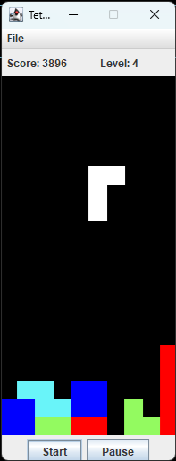
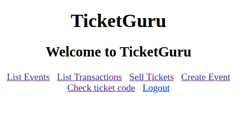
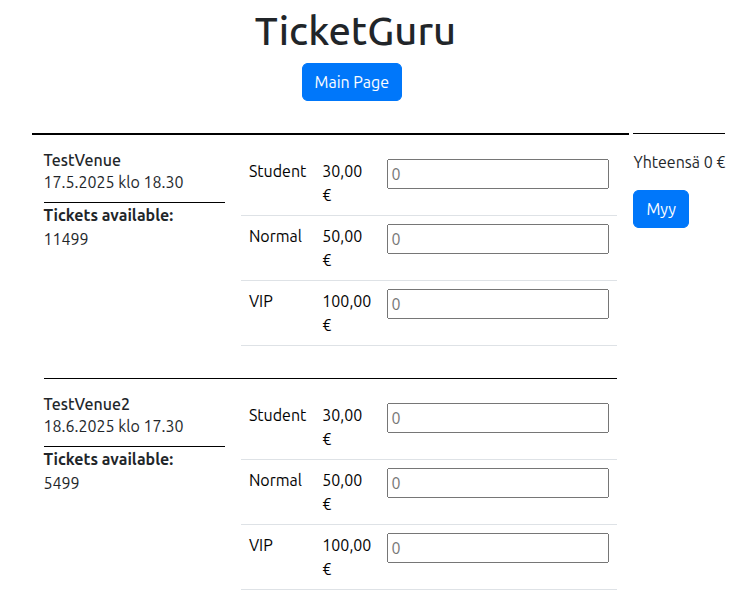
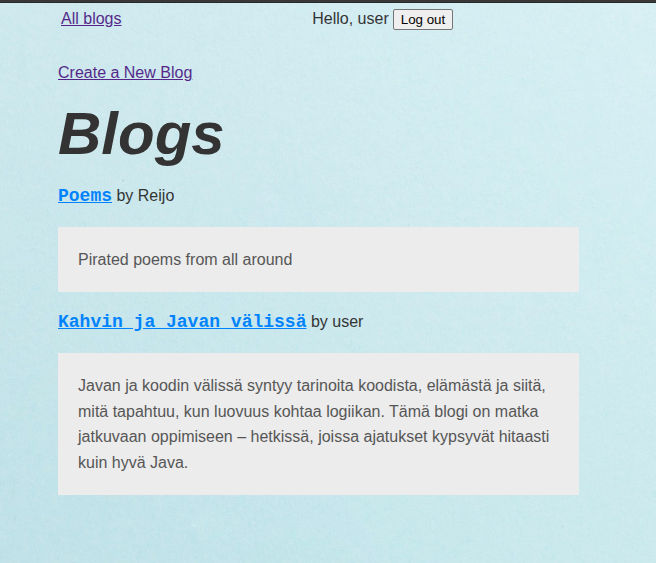
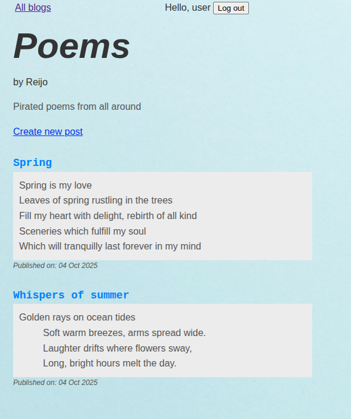

Otto Johansson
Innovatiivisia ratkaisuja, elegantteja teknologioita
Innovatiivisia ratkaisuja, elegantteja teknologioita
Tetris-klooni toteutettuna Java 1.4:llä ja Swing-käyttöliittymäkirjastolla 2000-luvun alussa. Sisältää täyden pelimekaniikan, pistelaskurin ja eri vaikeustasot.
 Java Swing OOPHaaga-Helian Ohjelmistoprojekti 1 -kurssin ryhmäharjoitustyönä tehty lipunmyyntijärjestelmä, jossa käytetty Spring Bootia, Javascriptiä ja PostgreSQL-tietokantaa.
  Java Spring Boot REST API PostgreSQLBackend-ohjelmointi -kurssin harjoitustyönä tehty blogialusta.
  Java Spring Boot ThymeleafTeen näytteenottoa, kliinistä fysiologiaa ja vierianalytiikkaa
Toimin preanalytiikassa näytteenottajana 2020 alkaen myös tiimivastaavana
Suuntaudun ohjelmistokehitykseen noudattaen pääosin full stack -kehittäjän opintopolkua
Suoritin bioanalyytikon AMK-tutkinnon Tampereen ammattikorkeakoulussa
Padasjoen lukio
Kirjoitin 4 eximiaa ja kaksi magnaa

Vahvuuslukuni: selo 1908 lichess.org rapid n. 2200
Yhteiskunta ja politiikka, ohjelmointi